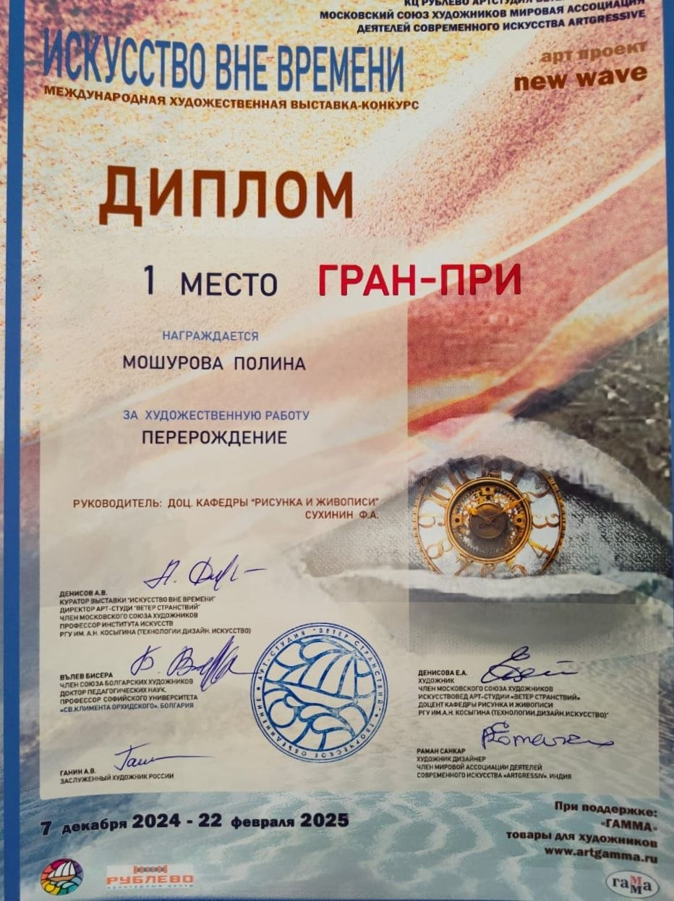

Мошурова Полина
Художник-живописец

Основные направления
Обо мне
Привет! Меня зовут Мошурова Полина, я начинающий художник-живописец. Сейчас обучаюсь на втором курсе станковой живописи в РГУ им. Косыгина. Мой главный инструмент — масло.
Для меня живопись — это возможность остановить мгновение, наполнить его светом, воздухом и той неуловимой энергией, которая делает картину "живой". Я работаю в традициях реалистической школы, но всегда ищу свою уникальную интонацию.
Меня вдохновляют богатство фактур масляной живописи, игра рефлексов и глубина цвета. Каждая моя картина — это результат долгого пути: от первого мазка до финального лака.
Образование и техника
РГУ им. А. Н. Косыгина
Станковая живопись, 2 курс
Масляная живопись
Работаю с маслом на холсте, используя классические техники многослойной живописи.
Достижения

Гран-при выставки "Искусство вне времени"
2025 год — работа "Перерождение" получила высшую награду выставки. Это важное признание стало большим стимулом для дальнейшего творческого развития.
Я стремлюсь к тому, чтобы мои работы не просто украшали стены, но становились частью истории дома, его душой и источником вдохновения.
Заинтересованы в сотрудничестве?
Готова обсудить проект, заказать картину или просто поговорить об искусстве
Связаться со мной